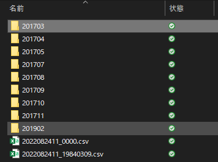
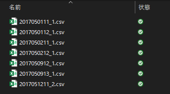
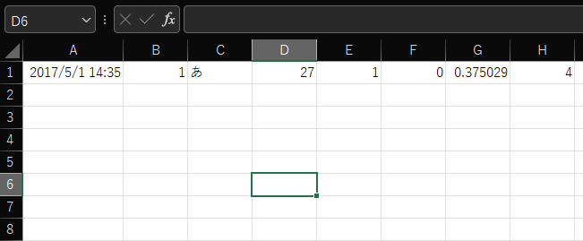
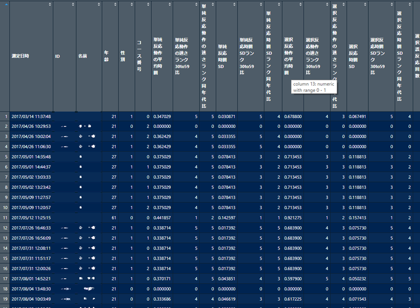
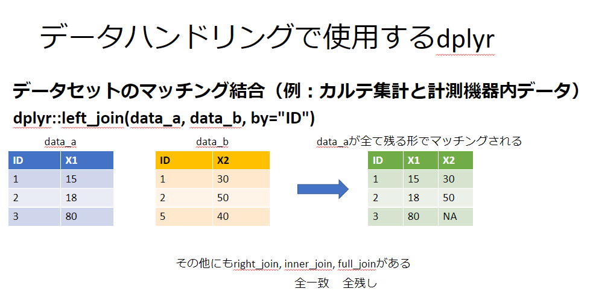

なぜRを使って自動化する必要があるか？
ここでは、Sナビのデータ抽出について、なぜRを使って自動化する必要があるかについて説明します。 実は、Sナビのデータログは、下記の構成でデータが格納されています。
メインPC（Sナビの真ん中の画面がつながっているPC）
ローカルディスク（C:） 通称Cドライブ
└ INSPECTIONDATA
├ 環境別走行体験
├ 危険予測体験
├ 総合学習体験
├ 総合学習体験印刷データ
├ 反応検査印刷データ
└ 運転操作課題これは総合学習体験印刷データのフォルダを開いたときの画像です。月ごとの各フォルダが格納されていることがわかります。

FIG. 1 — 月ごとのフォルダ
さらに、上記各フォルダをみていくと、このようにcsvデータが格納されています。

FIG. 2 — フォルダ内のcsvファイル
さらに、csvを開くと1回計測ごとのデータが格納されていて、しかも列名が付いていません。

FIG. 3 — 列名のないcsvデータ
フォルダの階層は下記のようになっています。
ローカルディスク（C:）
└ INSPECTIONDATA
├ 環境別走行体験
├ 危険予測体験
├ 総合学習体験
├ 総合学習体験印刷データ
│ ├ 202204
│ │ ├ 20220401131105_1.csv
│ │ └ 20220402151406_1.csv
│ └ 202205
└ …これを一つずつ開いてコピペという作業は、症例が数人だけのうちは良いかもしれませんが、 100人200人と増えてくると苦行です。臨床業務の合間やプライベートの時間を割いて進めるのは非常に大変で、 場合によっては発狂してきます……。当然ヒューマンエラーが起こる確率も上がり、漏れなどのミスにも繋がります。 しかも列名も付いていないので、非常に面倒な作業となります。
そこで、このデータの抽出・コピペ・列名付与をして、以下のようなデータセットを作るフローを Rで一気に自動化しようという試みです（下記のIDと名前はモザイクを掛けています）。

FIG. 4 — 完成するデータセットのイメージ
ここまで自動化できれば、あとはデータクリーニング（測定がうまくできなかった日時のデータを除外する）をして、 神経心理検査のデータベースや運転評価結果のデータベース、アウトカム（運転再開可否）のデータを マッチングして結合すれば、すべてが串刺しになったデータセットの完成です。

FIG. 5 — データベースのマッチング
Sナビからデータをコピーする
解析にあたって、Sナビからログデータをコピーする必要があります。 間違ってもSナビのPCで解析しようとはしないでください。
Sナビのログデータの格納場所は前述の通り、メインPCのCドライブ直下の「INSPECTIONDATA」フォルダです。 このINSPECTIONDATAというフォルダをまるっとコピーしてください。
R Studioでプロジェクトを作る
R Studioで解析するにあたり、一番参考になるのは@MITTIさんが公開している noteです。 @MITTIさんは、おそらくリハ職種の中では右に出る者はいない最強のR使いだと筆者は思っています。
RとR Studioのインストールが完了したら、いよいよ解析に向けてプロジェクトを作りましょう。 これも@MITTIさんのnote「【1-7】Rstudioのプロジェクトについて解説します」を参考にすると手っ取り早いです。
プロジェクトが完成したら、「***.Rproj」（***はプロジェクト名）と同じ階層に、 コピーしてきた「INSPECTIONDATA」フォルダを貼り付ければ、まとめて読み込み・解析に向けた準備は完了です！